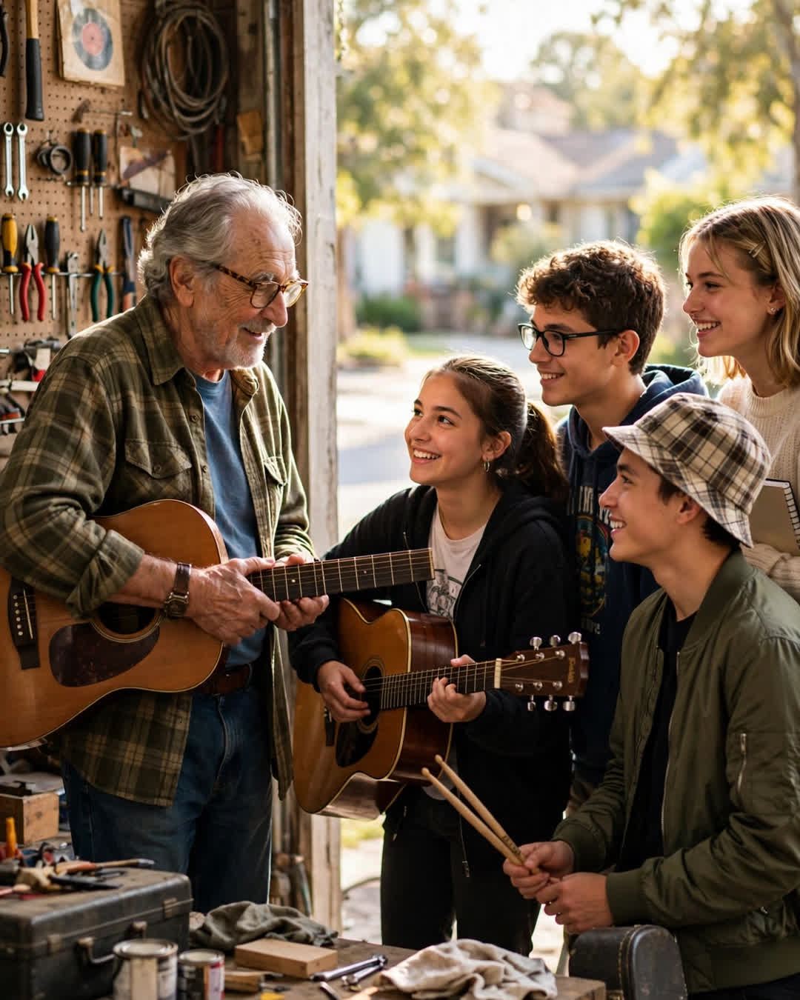

The Garage Sessions
A Clipp Kaili original story

Every Saturday for three years, the worst noise on our street came out of Mr. Russo's garage, and he never once complained about it.
Mr. Russo was seventy-eight, widowed, and famous on our block for exactly two things: a lawn you could measure with a ruler, and a temper that kids described as "old-country." When four teenagers from the high school — Marco on a borrowed guitar, Jen with a drum kit made partly of buckets, Luis and Priya sharing one working amp — needed a place to practice that was not somebody's mother's basement, everyone expected Mr. Russo to be the last door they should knock on.
He listened to their pitch on his porch with his arms folded. Then he said, "Saturdays. Door stays half-open so the street can suffer equally. And you will learn to tune before you learn to be loud. A band that cannot tune is just an argument with instruments."
What none of them knew — what the whole street did not know — was that Anthony Russo had spent the 1960s and '70s in recording studios in New York, a session guitarist whose hands are on songs everybody's grandparents slow-danced to. He never played lead on the famous parts. He never got his name on a cover. He just made other people's music hold together, took his check, and came home. When the studio work dried up, he put the guitar in a case in the garage rafters, married, fixed cars, raised kids, and did not touch it for thirty years.
Until four teenagers needed a garage.
Week by week, without ever announcing himself, he started teaching. How to listen for the one in a beat. How to leave space in a song instead of filling it. Why the bass player is the real driver and should act like it. He fixed their amp with parts from a radio older than their parents. When Jen's family could not afford real drums, he helped her build a kit that sounded, impossibly, almost good.
"You play like you are apologizing," he told Marco one Saturday, and took the borrowed guitar and — just for eight bars, just to show him — played something so clean and alive that all four of them stopped breathing.
"Again," Marco whispered.
"Next week," Mr. Russo said, and closed the case. "Suffer equally."
On his eightieth birthday, his daughter organized a small party on the driveway. Cake, folding chairs, neighbors with lemonade. The band arrived with their instruments and a set list they refused to show him. Then they started playing.
Every song was one of his. Not covers of the hits — the deep cuts, the session work, the songs where his guitar lived in the background holding everything together. They had spent six months hunting down old vinyl, learning his parts note for note, the fills and turns a hundred other teenagers would never have noticed.
Marco stepped to the little microphone halfway through and said, "For fifty years, Mr. Russo made other people sound good. Today we are just returning the equipment."
When they played the last song — a slow one from 1971 that his late wife used to request — the old man's hands rose from his lap, all on their own, and played air guitar along with every note he had recorded before any of them were born. Tears running. Mouthing the changes. Eighty years old, on his own driveway, finally hearing his life's work played back to him by four kids who had started out as noise.
His guitar hangs in that garage now, out of the rafters, on the wall by the door.
The door stays half-open on Saturdays. The whole street suffers, beautifully.
This story is a work of fiction, written to touch hearts and bring families closer.
← Back to all stories